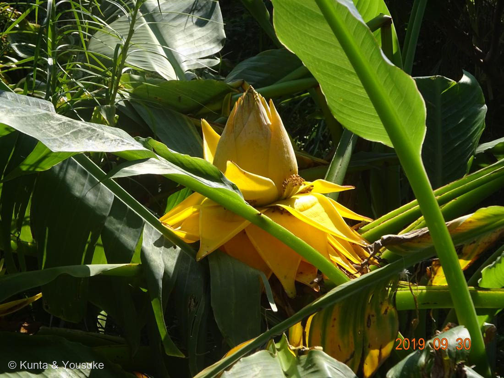

地図を読み込んでいるよ…
🔍 写真も地図も、押しているあいだ拡大して見られるよ（スマホは指を置いてすこし待ってね）。
🌍 の地図＝この子がもともと自生している場所を緑に。中国（四川・貴州・雲南の高山、標高2500mまで）。
⭐中国の3つの省だけ。しかも標高2500mまでの高山。──温室のあの子は、ずいぶん遠くから来ている。
⚠ 地図は国（日本と中国だけ県・省）までしか塗れないから、ほんとうの分布より広く見えていることがあるよ。地図はだいたいの場所。正確なところは、上の文を見てね。
チユウキンレン（地涌金蓮）
Musella lasiocarpa (Franch.) H.W.Li
別名 · ゴールデンロータスバナナ／地湧金蓮 ／ ムセラ属（1属1種）
バショウ科 · Musaceae（ムセラ属）── 069 バナナのいとこ
燻太さんが「お花の写真も」と金色の蓮。じつは、バナナの花ではなく、そのいとこそして、金の蓮の正体は「苞」
名前と学名の由来 ── 縁起
- ⭐属名 Musella は「小さな Musa（バナナ）」＝バナナに似た小型、の意味。種小名 lasiocarpa は lasios（軟毛）＋karpos（実）＝「毛深い実」。
- 地涌金蓮（ちゆうきんれん）＝「地から湧き出る、金の蓮」。仏教で、聖なるものが現れるときに大地から黄金の蓮が湧く、という言い伝えにちなむ縁起物。中国では古くから寺や庭に植えられてきた。
バナナのいとこ ── 金色の蓮
- 燻太さんが送ってくれたこの金の蓮は、069 バナナのお花ではなく、そのいとこ＝チユウキンレン（地涌金蓮）。英名ゴールデンロータスバナナ。
- ⭐同じバショウ科だけれど、1属1種の珍しい植物（DNA解析で、バナナ属 Musa ともエンセーテ属とも別と分かり、独立のムセラ属 Musellaになった）。
- ⭐中国・雲南などの高山（標高2500mまで）が原産＝バナナの仲間なのに、寒さにとても強い（日本の庭でもマルチをすれば冬を越せる）。熱帯のいとこ（バナナ）は暑さの子、この子は高山の子。
⭐⭐ あの「金の蓮」は、じつは苞（ほう）
- ⭐金色の蓮に見える部分は、花びらではなく「苞」＝葉の変形。広く重なった黄色い苞が、蓮の花のように開く。本当の小さな管状の花は、苞のあいだから、ちょこんと顔を出す（写真、苞の上の茶色っぽい粒々）。
- ⭐→ 029 コエビソウ（苞）・048 カラー（仏炎苞）・062 ハツユキソウ（白い葉）と同じ「苞・葉を、花の看板にする」仲間＝🎭「見た目と正体がちがう」の小道へ。
- ⭐しかも、この金の蓮は3〜6か月も咲きつづける（バショウ科で、いちばん長もちする観賞花のひとつ）。苞は葉だから、花びらより丈夫で、長く保つ。